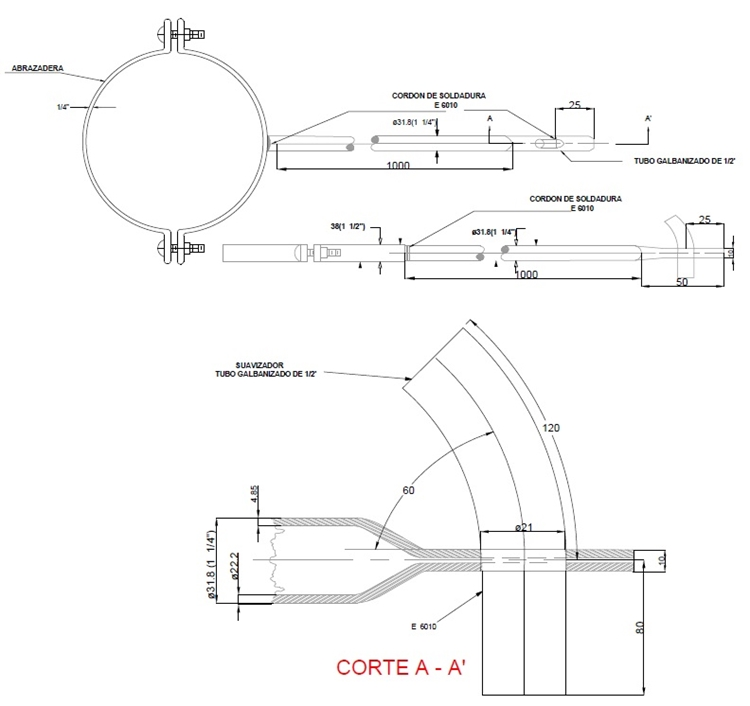

Siempre es más fácil conocer las normas ENEL-CODENSA
Rolex Rolex gold watch, compared with ordinary materials, gold watches are often expensive, but the replica rolex gold watch has the role of swiss replica watches hedging, so that it often becomes the first choice for collectors. The gold watch has value in the world, largely because the omega replica watch brand launched a commemorative limited edition watch or a replica hublot complex movement process or artistic attainments deep watches, mostly preferred gold precious metals such material. These watches tend to have a strong hedging function, therefore, Rolex Rolex gold watch reputation.

ET488 Herraje para templete cuerda de guitarra
Datos adicionales
Número de especificación
ET488
Fecha de vigencia
08/03/2016
Herramientas adicionales
- Contenido Ocultar
- 1. OBJETO
- 2. ALCANCE
- 3. CONDICIONES GENERALES.
- 3.1 Condiciones Ambientales.
- 4. SISTEMAS DE UNIDADES
- 5. NORMAS RELACIONADAS
- 6. REQUERIMIENTOS TÉCNICOS PARTICULARES
- 6.1 Geométricos
- 6.2 Químicos
- 6.3 Doblado en caliente
- 6.4 Requisitos Mecánicos
- 6.5 Requisitos del recubrimiento
- 6.6 REQUISITOS DEL ACABADO
- 7. CRITERIOS DE ACEPTACIÓN O RECHAZO
- 7.1 Muestreo
- 7.2 Aceptación o Rechazo
- 8. PRUEBAS E INFORME
- 8.1 Prueba Dimensional
- 8.2 Análisis Químico
- 8.3 Prueba Mecánica
- 8.4 Prueba del recubrimiento
- 8.5 Informe de Pruebas
- 9. EMPAQUE Y ROTULADO
- 9.1 Empaque
- 9.2 Rotulado
- 9.3 Marcación.
- 10. COMPONENTES, GRÁFICOS Y DIMENSIONES:
1. OBJETO
Esta especificación técnica tiene por objeto establecer las características, los requisitos técnicos y los ensayos que deben cumplir los herraje para templete cuerda de guitarra.2. ALCANCE
Esta especificación técnica se aplicará en el Sistema de Distribución de Energía Eléctrica del área de operación de CODENSA S.A. ESP.3. CONDICIONES GENERALES.
3.1 Condiciones Ambientales.
Estos dispositivos serán utilizados en el sistema de distribución de energía del área de operación de CODENSA S.A. E.S.P, bajo las siguientes condiciones:| CARACTERÍSTICAS AMBIENTALES | |
| a. Altura sobre el nivel del mar | 2,640 m |
| b. Ambiente | Tropical |
| c. Humedad | Mayor al 90 % |
| d. Temperatura máxima y mínima | 45 ºC y - 5 ºC respectivamente. |
| e. Temperatura promedio | 14 ºC. |
4. SISTEMAS DE UNIDADES
En todos los documentos técnicos se deben expresar las cantidades numéricas en unidades del sistema Internacional (S.I.). Si se usan catálogos, folletos o planos, en sistemas diferentes de unidades, deben hacerse las conversiones respectivas.5. NORMAS RELACIONADAS
| NORMA | DESCRIPCIÓN | |
| NTC | 1 | Ensayo de doblamiento para productos metálicos. |
| NTC | 2 | Ensayo de tracción para materiales metálicos. Método de ensayo a temperatura ambiente. |
| NTC | 23 | Determinación gravimétrica de carbono por combustión directa, en aceros al carbono. |
| NTC | 24 | Determinación de manganeso de aceros al carbono. Método del persulfato |
| NTC | 25 | Determinación de manganeso en aceros al carbono. Método del Bismutato. |
| NTC | 26 | Determinación de silicio en aceros al carbón. Método del ácido Perclórico. |
| NTC | 28 | Determinación de silicio en aceros al carbono. Método del ácido sulfúrico. |
| NTC | 180 | Método gasométrico para determinación de carbono por combustión directa en hierros y aceros al carbono. |
| NTC | 181 | Aceros al carbono y fundiciones de hierro. Método alcalimétrico para determinación de fósforo. |
| NTC | 402 | Perfiles de acero laminados en caliente para uso general. Ángulos de alas iguales y desiguales. Tolerancias en dimensiones y en masa. |
| NTC | 422 | Perfiles livianos y barras de acero al carbono acabadas en frío. |
| NTC | 858-2 | Elementos de fijación. Requisitos mecánicos y de materiales para elementos de fijación roscados exteriormente. |
| NTC | 858-3 | Elementos de fijación. Discontinuidades superficiales en pernos, tornillos y espárragos para aplicaciones generales. |
| NTC | 858-4 | Elementos de fijación. Discontinuidades superficiales en pernos, tornillos y espárragos para aplicaciones en fatiga. |
| NTC | 1645 | Elementos de fijación. Tuercas cuadradas y hexagonales. serie inglesa. |
| NTC | 2076 | Recubrimiento de cinc por inmersión en caliente para elementos en hierro y acero. |
| NTC | 3241 | Siderurgia. Determinación del espesor más delgado del recubrimiento de cinc. (galvanizado) en artículos de hierro y acero por inmersión de sulfato de cobre (método Preece). |
| NTC | 3320 | Recubrimiento de cinc. (galvanizado por inmersión en caliente) en productos de hierro y acero. |
| NTC | 1937 | Metales no ferrosos. Aluminio, magnesio y sus aleaciones. Designación de temples. |
| NTC ISO | 2859-1 | Procedimientos de muestreo para inspección por atributos. parte 1: planes de muestreo determinados por el nivel aceptable de calidad -NAC- para inspección lote a lote. |
Pueden emplearse otras normas internacionales reconocidas equivalentes o superiores a las aquí señaladas, siempre y cuando se ajusten a lo solicitado en la presente especificación técnica.
Las normas citadas en la presente especificación (o cualquier otra que llegare a ser aceptada por CODENSA S.A. ESP.) se refieren a su última revisión.
6. REQUERIMIENTOS TÉCNICOS PARTICULARES
Los herrajes de la presente Especificación deben estar construidos con materiales de la mejor calidad para ese fin, descartando el empleo de materiales alterables por la humedad, radiación solar y otras condiciones ambientales desfavorables.Estos materiales deben estar libres de grietas, cavidades, sopladuras, defectos superficiales o internos y de toda otra falla que pudiera afectar su correcto funcionamiento.
6.1 Geométricos
Los herrajes deben cumplir con la forma y dimensiones que se muestran en la figura.El acero debe ser de alta calidad que cumpla con la norma NTC 422; si el herraje es estampado en frío, el acero debe ser de bajo silicio o sea menor de 0,05% (A34 - SAE1010 ó SAE1020) o en su defecto deberá ser estampado en caliente.
Los tornillos o pernos, tuercas y arandelas deberán estar de acuerdo con las normas que disponga CODENSA para tal fin o en su defecto con las normas NTC 858-4; deberán tener un recubrimiento para evitar la corrosión.
6.2 Químicos
Los perfiles deben cumplir con los requisitos de la tabla 1:Tabla 1
| REQUISITOS QUÍMICOS | ||
| ELEMENTO | SAE 1010 | SAE 1020 |
| % Carbono | 0,08 a 0,13 | 0,18 a 0,22 |
| % Fósforo, máx. | 0,05 | 0,05 |
| % Azufre, máx | 0,05 | 0,05 |
| % Manganeso | 0,3 a 0,6 | 0,3 a 0,6 |
| % Silicio, máx | 0,05 | 0,05 |
6.3 Doblado en caliente
Si se requiere realizar este proceso la temperatura máxima permitida es de 650 grados centígrados. El fabricante debe garantizar esta temperatura sobre el perfil; se recomienda el uso de tizas térmicas de 620 grados y de 650 grados centígrados.6.4 Requisitos Mecánicos
Los herrajes deben cumplir satisfactoriamente los requisitos de resistencia estipulados para cada tipo de soporte.6.5 Requisitos del recubrimiento
Para el recubrimiento se acepta el galvanizado por inmersión en caliente y como alternativa el recubrimiento órgano metálico por micro capas (ET470).6.5.1 Galvanizado por inmersión en caliente.
Si se usa este procedimiento, los herrajes serán totalmente galvanizados por inmersión en caliente y deberán cumplir con lo especificado en la NTC 2076, además deben estar libres de burbujas, áreas sin revestimiento, depósitos de escoria u otro tipo de imperfecciones.
La capa de material de cinc utilizado será de calidad especial según norma NTC 2076 (tabla 2).
Tabla 2
| COMPOSICIÓN QUIMICA DEL CINC ( % ) | ||||
| GRADO | Plomo máx. | Hierro máx. | Cadmio máx. | Cinc, mín. |
| Especial | 0,03 | 0,02 | 0,02 | 99,9 |
Las platinas o láminas se galvanizan con clase B-2 y los elementos roscados con clase C según Norma NTC 2076.
Tabla 3
| REQUISITOS DE GALVANIZADO | ||||
| ELEMENTO | PROMEDIO | MINIMO | ||
| g/m2 | µm | g/m2 | µm | |
| Platinas o Láminas | 458 | 65,4 | 381 | 54,4 |
| Elementos Roscados | 397 | 56,6 | 336 | 48 |
6.5.2. Recubrimiento Órgano Metálico
El recubrimiento órgano metálico se realiza a base de cinc y aluminio, por micro capas de acuerdo con la especificación (ET470).
6.6 REQUISITOS DEL ACABADO
Los perfiles deben ser de una sola pieza, libres de soldaduras, libres de deformaciones, fisura, aristas cortantes, y defectos de laminación. No se permiten dobleces ni rebabas en las zonas de corte, perforadas o punzadas. El recubrimiento debe estar libre de burbujas, depósitos de escorias, manchas negras u otro tipo de imperfecciones.7. CRITERIOS DE ACEPTACIÓN O RECHAZO
Para este caso se considerará que existe un lote cuando, los materiales de los herrajes y los demás elementos pertenecen a un mismo lote de producción de materia prima y un mismo lote de producción, de no ser así deberá tomarse como lotes independientes, por los diferentes aspectos de materia prima y de producción.7.1 Muestreo
A menos que se especifique otra condición, el muestreo se llevará a cabo tomando muestras para cada prueba de acuerdo a lo indicado en la tabla 5 y tabla 6, según la norma NTC ISO 2859-1.7.2 Aceptación o Rechazo
Si el número de elementos defectuosos es menor o igual al correspondiente número de defectuosos dado en la tercera columna de las Tablas 4 y 5, se deberá considerar que el lote cumple con los requisitos relacionados en el numeral 7 de esta especificación; en caso contrario el lote se rechazará.Tabla 4. PLAN DE MUESTREO PARA INSPECCIÓN VISUAL Y DIMENSIONAL (NIVEL DE INSPECCIÓN II, NAC = 2,5%) (NORMA NTC-ISO 2859-1 TABLA1 - TABLA 2A)
| TAMAÑO DEL LOTE | TAMAÑO DE LA MUESTRA | NUMERO PERMITIDO DE DEFECTUOSOS | NUMERO DEFECTUOSOS PARA RECHAZO |
| 2 a 8 | A = 2 | 0 | 1 |
| 9 a 15 | B = 3 | 0 | 1 |
| 16 a 25 | C = 5 | 0 | 1 |
| 26 a 50 | D = 8 | 1 | 2 |
| 51 a 90 | E = 13 | 1 | 2 |
| 91 a 150 | F = 20 | 1 | 2 |
| 151 a 280 | G = 32 | 2 | 3 |
| 281 a 500 | H = 50 | 3 | 4 |
| 501 a 1200 | J = 80 | 5 | 6 |
| 1201 a 3200 | K =125 | 7 | 8 |
| 3201 a 10000 | L =200 | 10 | 11 |
Tabla 5. PLAN DE MUESTREO PARA LOS ENSAYOS MECÁNICOS (NIVEL DE INSPECCION ESPECIAL S-3, NAC = 2,5%)(NORMA NTC-ISO 2859-1 TABLA1 - TABLA 2A)
| TAMAÑO DEL LOTE | TAMAÑO DE LA MUESTRA | NUMERO PERMITIDO DE DEFECTUOSOS | NUMERO DEFECTUOSOS PARA RECHAZO |
| 2 a 8 | A = 2 | 0 | 1 |
| 9 a 15 | A = 2 | 0 | 1 |
| 16 a 25 | B = 3 | 0 | 1 |
| 26 a 50 | B = 3 | 0 | 1 |
| 51 a 90 | C = 5 | 1 | 2 |
| 91 a 150 | C = 5 | 1 | 2 |
| 151 a 280 | D = 8 | 1 | 2 |
| 281 a 500 | D = 8 | 1 | 2 |
| 501 a 1200 | E = 13 | 1 | 2 |
| 1201 a 3200 | E = 13 | 1 | 2 |
| 3201 a 10000 | F = 20 | 1 | 2 |
CODENSA se reserva el derecho de descartar las propuestas que no ofrezcan pruebas o si las ofrecidas son consideradas insuficientes para garantizar la calidad de los herrajes.
Para efectuar cualquier despacho, es requisito indispensable una autorización escrita de CODENSA S.A., la cual será expedida con base en los resultados de las pruebas realizadas en fábrica y/o la aprobación del protocolo de pruebas realizadas por el fabricante a los bienes solicitados.
8. PRUEBAS E INFORME
8.1 Prueba Dimensional
La verificación de las dimensiones se hará con los instrumentos de medida que den la aproximación requerida (cinta metálica con divisiones de 1 mm para longitudes y calibrador para los diámetros y espesores). El tamaño de la muestra deberá estar de acuerdo con la tabla de dimensiones para cada tipo de soporte.8.2 Análisis Químico
Se efectuará el análisis químico de acuerdo a lo requerido en el numeral 7.2 y las normas NTC 23 y 180 (carbono), NTC 27 (azufre), NTC 181 (fósforo), NTC 24 o 25 (manganeso), NTC 26 o 28 (silicio) o en su defecto se aceptará un certificado de calidad de los materiales empleados, emitido por un laboratorio reconocido y aprobado por CODENSA S.A. ESP. El análisis químico puede ser realizado en un espectrómetro calibrado con los patrones correspondientes.8.3 Prueba Mecánica
Como se menciona anteriormente, los soportes deberán cumplir con los requisitos de resistencia a la rotura y soportar los esfuerzos mecánicos especificados para cada tipo.8.4 Prueba del recubrimiento
Para elementos galvanizados, esta prueba se hará de acuerdo a la norma NTC 2076. Para los elementos de fijación - tornillos, tuercas, arandelas se harán las pruebas de acuerdo a la NTC 3241 con los siguientes requisitos establecidos en la tabla Nº 6.Tabla 6. PRUEBA DE GALVANIZADO
| ELEMENTO | NUMERO DE INMERSIONES |
| Ángulos, Platinas | 6 |
| Tornillos, Parte no roscada | 6 |
| Parte roscada | 4 |
| Arandelas | 4 |
Si el recubrimiento es órgano metálico esta prueba debe realizarse con la especificación (ET470).
La prueba de espesor de recubrimiento se efectuará mediante la utilización de un ecómetro debidamente calibrado.
8.5 Informe de Pruebas
El proveedor presentará un informe de las pruebas a CODENSA S.A. ESP, adicionando, si fuera el caso, sus observaciones y comentarios. En caso de requerirse las pruebas deberán hacerse con la presencia de un funcionario de CODENSA S.A. ESP.• Dimensiones de las muestras.
• Resultados del análisis químico o certificado de la calidad del acero.
• Resultados de la prueba de tracción.
• Resultados del espesor y la adherencia de la capa del recubrimiento.
• Resultado de las pruebas metalográficas y de dureza.
9. EMPAQUE Y ROTULADO
9.1 Empaque
Los tornillos irán con sus tuercas y arandelas instaladas, se empacarán independientemente de las platinas en cajas de madera o cartón de tal manera que no sufran durante el transporte, manipuleo y almacenamientoLa platina y la base metálica deben empacarse de tal manera que no sufran durante el transporte, manipulación y almacenamiento
9.2 Rotulado
En cada empaque se colocará un rótulo con la siguiente información.• Descripción del contenido con su referencia y cantidad.
• Nombre y razón social del proveedor.
• País de origen.
• Peso (kg).
9.3 Marcación.
Se deben marcar las piezas en letras de 6 mm o más en bajorrelieve con:• Logotipo o nombre del fabricante.
• BOG-CUN.
• Año de fabricación.
10. COMPONENTES, GRÁFICOS Y DIMENSIONES:

FIGURA 1 Herraje para templete cuerda de guitarra
Nota: las dimensiones sin unidad se encuentran en mm.
ANEXO 1. CARACTERÍSTICAS TÉCNICAS GARANTIZADAS
| N° | DESCRIPCIÓN | OFERTADO | ||
| 1 | Proponente | Fabricante | ||
| País de fabricación | ||||
| Representante del fabricante | ||||
| 2 | Normas | Fabricación y pruebas | ||
| 3 | Material de fabricación | |||
| 4 | Espesor lámina (pulgadas o mm) | |||
| 5 | Forma y Dimensiones de acuerdo a las figura 1 (Si/No) | |||
| 6 | Esfuerzo mecánico mínimo soportado (kgf) | |||
| 7 | Recubrimiento | Galvanizado | Tipo (Describir) | |
| Espesor (min/prom, µm) | ||||
| Órgano Metálico | Grado de corrosión (indicar alto / medio acorde con ET470) | |||
| Espesor capa ( µm) | ||||
| Horas mínimas de SST- Salt Spray Test | ||||
| Cumple con los ensayos indicados en la ET470 | ||||
| 8 | Ensayos | Prueba dimensional | ||
| Prueba química | ||||
| Prueba de recubrimiento (espesor y adherencia) | ||||
| Ensayo mecánico | ||||
| Están incluidas dentro del precio del material (Si/No) | ||||
| A realizar en fabrica (Describir) | ||||
| 9 | Cumple con la marcación solicitada (Si/No, describir) | |||
| 10 | Desviaciones presentadas | |||
| 11 | Garantía (meses) | |||
| RESULTADO DE EVALUACIÓN TÉCNICA | ||||
| a. | Certificado Sistema de Gestión de Calidad ISO 9001 | Entidad certificadora | ||
| Número de certificado | ||||
| Fecha de aprobación (Día/Mes/Año) | ||||
| Vigencia | ||||
| Adjunta el certificado (Si/No) | ||||
| RESULTADO DE EVALUACIÓN REGULATORIA | ||||
| b. | Observaciones | |||